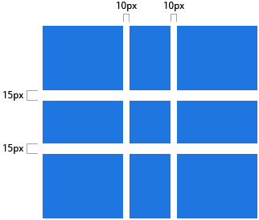

CSS Grid Layout
Created by Artur Pakhomau
The main therms of the CSS Grid
- Fixed and flexible strip size
- Location of the element
- Alignment of the element
- Overlapping content management
CSS GRID example
Html code example
One
Two
Three
Four
Five
Six
Code example of css grid
.wrapper {
display: grid;
grid-template-columns: repeat(3, 1fr);
grid-gap: 10px;
grid-auto-rows: minmax(100px, auto);
}
.one {
grid-column: 1 / 3;
grid-row: 1;
}
.two {
grid-column: 2 / 4;
grid-row: 1 / 3;
}
.three {
grid-column: 1;
grid-row: 2 / 5;
}
.four {
grid-column: 3;
grid-row: 3;
}
.five {
grid-column: 2;
grid-row: 4;
}
.six {
grid-column: 3;
grid-row: 4;
}
Grid container
Grid lines are the horizontal and vertical dividers of the grid container.
Grid bands
Grid bands are what limited by a pair of neighboring grid lines.

Grid area
Grid area - is the space inside the grid container in which one or more grid elements can be placed.
Grid cell
A grid cell - is the smallest indivisible unit of a grid container that can be refered to whenpositioning grid elements.

Grid track
Grid track - is the space between two ajacent grid-lines, verticalor horizontal.
Code example of grid track
.container {
grid-column-gap: 10px;
grid-row-gap: 15px;
}
Advantages and disadvantages of this technology
- The CSS Grid makes HTML cleaner.
- The markup is easier.There aren't many classes and aditional tags.
- This technology makes page layout easier.
- This technology is Great for creating and managing large layouts.
- The main disavantages is that there is no sufficient support for browsers internet explorer 10 and 11.